CAPÍTULO 2 ARMAZENAMENTO DE HIDROGÊNIO
Atualmente, o armazenamento de hidrogênio é realizado na forma líquida e gasosa. Armazenar o hidrogênio líquido pode ser uma forma de armazenamento de energia, no entanto, requer temperaturas criogênicas, porque o ponto de ebulição do gás hidrogênio é de –252,8 °C a pressão de 1 atm. O armazenamento do \(H_2\) gasoso, normalmente requer cilindros ou tanques de alta pressão (350-700 bar). A alta eficiência do processo de pressurização dos gases torna o processo uma alternativa eficaz para o armazenamento de energia, visto que no processo de liquefação a energia necessária para resfriar o gás pode ser inviável. Atualmente as tecnologias alternativas para armazenamento de energia utilizando hidretos metálicos, por exemplo, adsorção de hidrogênio em nanotubos de carbono, possuem altas eficiências sendo muito promissoras. Outra tecnologia bastante estudada, são os carreadores/transportadores de hidrogênio, os quais são compostos químicos que conseguem armazenar o hidrogênio em moléculas maiores, liberando o gás depois, funcionando como um armazenador de hidrogênio. Existem 2 tipos de carreadores: os reversíveis que após a liberação do gás podem ser reutilizados, e os não reversíveis que após a liberação do hidrogênio não podem ser reutilizados. Os carreadores precisam de energia para a sua formação e investimentos econômicos em pesquisa para se consolidarem no mercado.
2.1 Armazenamento Físico do Hidrogênio
O armazenamento físico de hidrogênio está relacionado à contenção do \(H_2\) em meios físicos, sem modificar a sua composição química. Os principais meios de contenção são:
Hidrogênio Líquido (\(LH_2\)), o armazenamento é feito com o hidrogênio no estado líquido em temperaturas criogênicas
Hidrogênio Comprimido (\(CGH_2\)), o armazenamento é realizado com o hidrogênio no estado gasoso em altas pressões, utilizando vasos de pressão
Armazenamento em Estado Sólido, ocorre pelo processo de absorção ou adsorção em materiais sólidos, \(H_2\) interage fisicamente com a superfície ou com a estrutura do material no qual será armazenado.
2.1.1 Armazenamento de hidrogênio líquido
Armazenar o hidrogênio no estado líquido (\(LH_2\)) é uma alternativa ao armazenamento de \(H_2\) gasoso comprimido, apesar do armazenamento e a distribuição do hidrogênio puro no estado líquido envolverem custos elevados, a sua densidade energética volumétrica à pressão atmosférica torna o hidrogênio líquido uma excelente forma de distribuição [2, 3]. Porém esse processo ainda é acompanhado de grandes de desafios tecnológicos e energéticos que devem ser considerados, principalmente relacionado às temperaturas criogênicas necessárias para manter o hidrogênio no estado líquido.
A liquefação do hidrogênio envolve o resfriamento do gás a temperaturas extremamente baixas, abaixo de seu ponto de ebulição de -252,7 °C (20,4 K) à pressão atmosférica. Este processo é complexo e energeticamente intensivo, exigindo ciclos termodinâmicos sofisticados e equipamentos especializados. O processo de liquefação se baseia no processo Joule-Thomson e como o hidrogênio possui um coeficiente Joule-Thomson negativo à temperatura ambiente, não resfria durante os processos de estrangulamento, necessitando de pré-resfriamento no processo de liquefação o que eleva ainda mais o custo de obtenção do hidrogênio líquido (Figura 2.1). No processo de liquefação, para a produção de 1 kg de hidrogênio líquido, a energia consumida é de 10.8 a 12.7 kWh/kg [2].
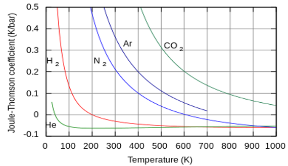
Figura 2.1: Coeficiente Joule Thomson em função da temperatura. Fonte: [4].
Apesar de o hidrogênio líquido ser armazenado em uma temperatura muito baixa não há necessidade de altas pressões, mas a grande vantagem é a densidade volumétrica, de 70,8 kg/m3, que é bem maior do que do hidrogênio gasoso, facilitando o transporte e o manuseio, no entanto o processo de liquefação requer um alto consumo energético.
O processo de liquefação de \(H_2\) é similar ao ciclo de compressão e refrigeração de geladeiras, mas operando em temperaturas muito mais baixas. A eficiência energética da liquefação é um fator crítico, pois pode consumir até 40% do conteúdo energético do hidrogênio armazenado [5].
Além da dificuldade de liquefação do hidrogênio, ele não pode ser armazenado no estado líquido indefinidamente. Mesmo os melhores tanques com excelente isolamento, permitem a troca de calor com os ambientes externos ocasionando perdas por evaporação. Este fenômeno é conhecido como perda por evaporação ou boil-off. As perdas por boil-off representam uma ineficiência e um risco de segurança se o gás não for gerenciado adequadamente e se torna maior quando os tanques ficam parados de 1 a 3 dias [6].
Mesmo com o melhor isolamento, uma pequena quantidade de calor sempre penetra no tanque de \(LH_2\), causando a vaporização de parte do hidrogênio líquido. Essa troca de calor com o ambiente externo, promove a evaporação do hidrogênio que consequentemente aumenta a pressão do tanque. Se o hidrogênio não for consumido mais rapidamente que sua evaporação, a pressão interna cresce até um ponto em que o hidrogênio deve ser descarregado por uma válvula de alívio de pressão, ocasionando as perdas. O hidrogênio descarregado não é só uma perda direta, deve-se considerar também que o hidrogênio tem uma faixa de inflamabilidade muito ampla, de 4% a 75%, assim a mistura do hidrogênio descarregado com o ar atmosférico pode formar uma nuvem com alto poder de inflamabilidade, levando a um alto risco de ignição ou explosão [1, 7, 8].
Para minimizar essa troca de calor utiliza-se tanques esféricos de grandes volumes, com paredes duplas sob vácuo (Figura 2.2). Como consequência, a utilização do hidrogênio no estado líquido ainda não é uma solução preferencial a mobilidade, principalmente em veículos pequenos, mas é indicada para o armazenamento estacionário e o transporte deste gás usando caminhões tanques que podem exceder uma capacidade de 60.000 L ou embarcações com tanques criogênicos fazendo o transporte intercontinental de hidrogênio na forma líquida [8].
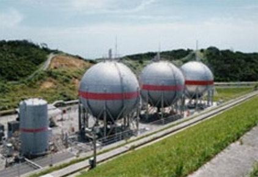
Figura 2.2: Tanques para armazenamento de hidrogênio líquido. Fonte: [9].
Outro fator importante nos tanques de armazenamento de \(LH_2\), é que seja leve e tenha baixa condutividade térmica para garantir menor evaporação e menos consumo de energia durante o processo de refrigeração. É imprescindível o cuidado com o isolamento deste tipo de reservatório, pois qualquer contato com temperaturas mais elevadas pode fazer com que o ar atmosférico condense e solidifique na superfície do cilindro, isso porque o \(H_2\) está em uma temperatura de 20 K (-253 °C)
O armazenamento de \(LH_2\) requer tanques criogênicos projetados especificamente para manter o hidrogênio em sua fase líquida a -253 °C. O design e os materiais desses tanques são cruciais para minimizar a transferência de calor e as perdas por evaporação. Os tanques criogênicos são tipicamente construídos de vasos de parede dupla com vácuo entre as paredes e são preenchidos com materiais isolantes. Isso proporciona uma barreira térmica eficaz. Os materiais utilizados na construção dos tanques devem ser capazes de suportar temperaturas criogênicas sem se tornarem frágeis [10].
Devido às excelentes propriedades de resistência e ductilidade em baixas temperaturas, os aços inoxidáveis austeníticos e algumas ligas de \(Al\), são os materiais mais utilizados para a fabricação de tanques criogênicos. Apesar da existência de vácuo entre as paredes dos tanques fornecer um isolamento muito eficiente, também são utilizados poliuretano ou espuma de vidro como isolamento em multicamadas para evitar ainda mais a transferência de calor, além disso, sistemas de alívio de pressão e ventilação adequados são essenciais para evitar acúmulo de pressão e o boil-off [11]. A empresa LINDE, oferece tanques criogênicos para armazenamento de diversos gases liquefeitos, dentre eles o hidrogênio (Figura 2.3).
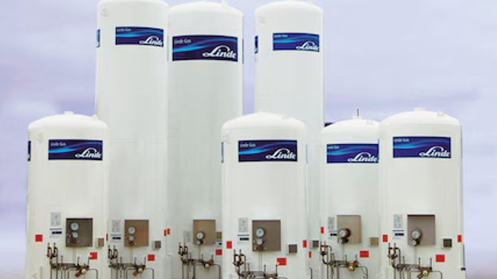
Figura 2.3: Tanques criogênicos para armazenamento de gases liquefeitos. Fonte: [12].
Outra forma de armazenar o hidrogênio líquido é sob criocompressão, onde o hidrogênio é armazenado sob temperaturas criogênicas (20 K) e sob pressão. A capacidade de armazenamento de hidrogênio crio-comprimido é de aproximadamente 80 g/L, maior que o hidrogênio líquido e com menores perdas por evaporação. Esse sistema deve ser suportado com tanques tipo III com dupla parede sob vácuo, para assim a perda por evaporação ser menor. Neste caso, o período de dormência (período até se iniciar a perda por evaporação) é maior que 7 dias, em cilindros com 85% da capacidade de hidrogênio [13].
2.1.2 Armazenamento de hidrogênio gasoso
2.1.2.1 Princípios da compressão de gases (leis dos gases ideais e reais)
A compressão de gases é um processo termodinâmico que visa reduzir o volume de um gás, aumentando sua pressão. Para o hidrogênio, a compressão é essencial para aumentar sua densidade volumétrica e torná-lo viável para armazenamento e transporte. Os princípios que regem esse processo são descritos pelas leis dos gases, que podem ser idealizadas ou reais [14].
As leis dos gases ideais (Lei de Boyle e Charles e Lei de Gay-Lussac) descrevem o comportamento de um gás ideal, onde as interações intermoleculares são desprezíveis e o volume das moléculas é insignificante. A equação de estado dos gases ideais é dada por (2.1):
\[\begin{equation} PV = nRT \tag{2.1} \end{equation}\]
Onde: \(P\) é a pressão, \(V\) é o volume, \(n\) é o número de mols, \(R\) é a constante dos gases ideais, \(T\) é a temperatura.
Essa lei fornece uma boa aproximação para o comportamento do hidrogênio a baixas pressões e altas temperaturas.
Em altas pressões, como as utilizadas no armazenamento de \(CGH_2\) (350 a 700 bar), o hidrogênio se comporta como um gás real, e as leis dos gases ideais não são mais precisas. Nesses casos, as interações intermoleculares e o volume das moléculas tornam-se importantes e significativos. Para descrever o comportamento de gases reais, utiliza-se o fator de compressibilidade (\(Z\)), que é uma correção para a equação dos gases ideais, apresentada em (2.2):
\[\begin{equation} PV = ZnRT \tag{2.2} \end{equation}\]
O fator \(Z\) desvia-se de 1 em altas pressões. Para o hidrogênio, \(Z > 1\) em todas as pressões elevadas, indicando que ele é menos compressível do que um gás ideal nessas condições. A compreensão do comportamento do hidrogênio como gás real é crucial para o projeto eficiente e seguro de compressores e vasos de pressão [15].
2.1.2.2 Tipos de armazenamento de H₂ gasoso
Os vasos de pressão são componentes críticos para o armazenamento do hidrogênio comprimido. Eles devem ser projetados e construídos para suportar pressões extremamente altas e garantir a integridade estrutural ao longo do tempo. O armazenamento de hidrogênio gasoso comprimido (\(CGH_2\)) é uma das formas mais utilizadas para armazenar o gás, o qual envolve em contê-lo em alta pressão dentro de cilindros construídos de materiais capazes de suportar pressões elevadas.
Devido às suas características o armazenamento de hidrogênio na forma de gás, implica a utilização de materiais avançados, investimentos e custos operacionais elevados e quanto maior a pressão de armazenamento maior o custo. Como o \(H_2\) possui baixa densidade, industrialmente ele não é armazenado em grandes quantidades, utilizando pressões entre 100 e 200 bar. Já em sistemas de armazenamento veicular, o hidrogênio é armazenado sob altas pressões, 350 ou 700 bar, utilizando cilindros metálicos revestidos com fibra carbono. Na mobilidade, o armazenamento em altas pressões é necessário pois para que o veículo tenha autonomia é fundamental o armazenamento de grandes quantidades de hidrogênio, ocupando o menor volume possível [1, 16].
Os cilindros para armazenamento de hidrogênio gasoso são classificados em quatro tipos (Figura 2.4): totalmente metálicos (tipo I), corpo metálico revestido na parte cilíndrica com compósitos de fibra-resina (tipo II), corpo metálico totalmente, revestido com compósitos de fibra-resina (tipo III) e corpo polimérico totalmente, revestido com fibra (tipo IV).
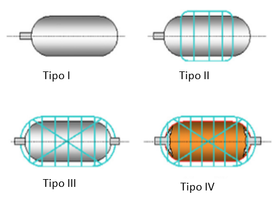
Figura 2.4: Representação esquemática dos tipos de cilindros para armazenamento de hidrogênio. Fonte: [17].
Os cilindros do tipo I e tipo II são utilizados em aplicações estacionárias, como por exemplo, o transporte de \(H_2\) de uma usina de produção para um posto de abastecimento. Normalmente os cilindros do tipo I, são fabricados de aço inoxidável ou alumínio e suportam pressões de 150 a 300 bar. Os cilindros do tipo II são fabricados em alumínio com uma camada de fibra de carbono em volta somente da parte cilíndrica, tem capacidade de suportar pressão de até 300 bar. [17, 18].
Os tanques do tipo III e IV são mais utilizados em aplicações portáteis, para as quais a economia de peso é essencial, geralmente são construídos de finas camadas de alumínio revestida com compósito, que os torna altamente resistentes e mais leves. Especificamente o cilindro tipo III é constituído de uma vaso de alumínio envolvido totalmente por uma fibra de carbono e é capaz de suportar até 700 bar de pressão. Os cilindros do tipo IV são fabricados de polietileno de alta densidade e para aumentar a sua resistência para suportar altas pressões, ele é envolto por uma composição contendo fibra de carbono ou aramida, assim consegue armazenar H2 em pressões de até 1000 bar [18, 16, 19, 20].
Outra forma de armazenamento de hidrogênio são os gasômetros (Figura 2.5), que têm como principal função a retenção temporária de gás entre a unidade de produção de gás e o compressor, de forma a permitir incompatibilidades de curta duração entre a taxa de produção de gás e a taxa de compressão.
Os gasômetros são formados por um tambor em forma de sino, suspensa por roldanas de contrapeso (Figura 2.5). O movimento axial da seção superior é acionado pela pressão do gás de entrada, ou seja, ela sobe à medida que o volume de gás aumenta e desce a medida que o volume de gás diminui. Assim, a pressão do gasômetro é proporcional ao peso da seção superior [21].
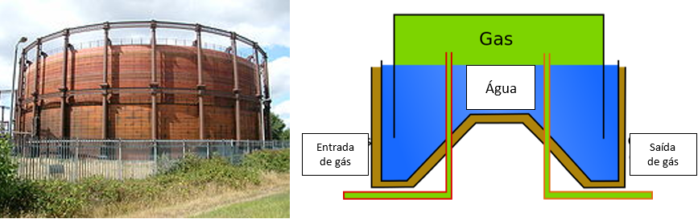
Figura 2.5: Gasômetro para armazenamento de hidrogênio. Fonte: [22].
Uma opção mais promissora para o armazenamento do hidrogênio gasoso é o armazenamento em tubos, devido à alta capacidade de compressão que depende apenas da resistência e espessura dos tubos. A construção é simples pode-se utilizar tubos curtos com extremidades seladas e diâmetros que podem chegar até 1,4 m, que possuem grande capacidade de armazenamento (Figura 2.6).
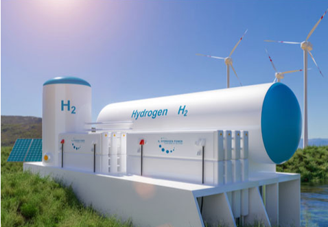
Figura 2.6: Tanque tubular para o armazenamento de hidrogênio. Fonte: [23].
Grandes quantidades de hidrogênio também podem ser armazenadas por longos períodos de tempo, com grande eficiência e baixo custo no subsolo, em campos de petróleo ou gás esgotados, aquíferos ou cavernas de sal (Figura 2.7). As cavernas de sal têm se mostrado as mais promissoras pois apresentam baixos riscos de contaminação do hidrogênio, baixas taxas de vazamento, altas taxas de retirada e injeção e baixo custo de construção [24, 25]. Ao contrário dos reservatórios esgotados de gás natural e petróleo, a contaminação do hidrogênio armazenado é baixa e sua eficiência de entrada e saída é de 98%.
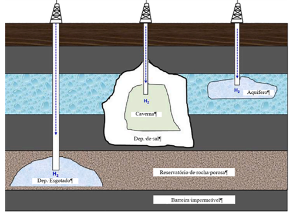
Figura 2.7: Armazenamento de hidrogênio no subsolo. Fonte: [26].
Para a construção das cavernas de sal é necessário encontrar uma camada de sal na estrutura geológica que possibilite sua construção, há a necessidade de perfuração, tal qual poço de petróleo, além da diluição de parte do sal da camada para formar uma caverna que possibilite armazenar o \(H_2\). É necessário bombear água para o interior da camada de sal e deixar que a água dilua o sal, depois é inserido o \(H_2\) e retirada a salmoura (Figura 2.8). O reservatório pode ser utilizado de 2 formas [18].
Aumentando e reduzindo a pressão de H2 na caverna de sal
Trocando o H2 da caverna por salmoura.
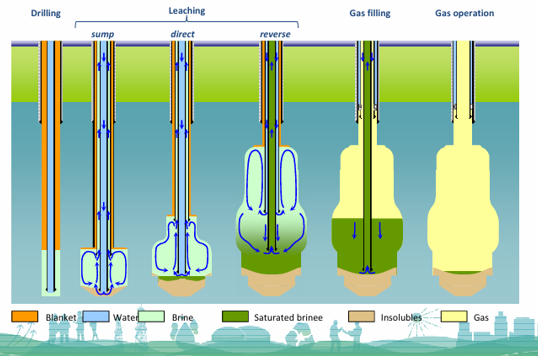
Figura 2.8: Etapas da construção de uma caverna de sal. Fonte: [27].
As cavernas de sal nunca podem ser totalmente esvaziadas, pois isso ocasionaria um problema grave de diminuição da pressão interna, provocando o colapso da caverna de sal.
2.1.3 Armazenamento de hidrogênio adsorvido
O hidrogênio na forma de gás também pode ser armazenado quando este é adsorvido na superfície de materiais com grande área superficial. Esta é uma das formas de armazenamento mais seguras e tem apresentando resultados bem promissores. Os materiais mais estudados são os materiais porosos à base de carbono [28, 29, 30], estruturas metal-orgânicas (MOFs) [31] e zeólitas [32] em sua forma pura ou dopados com outros elementos. A capacidade de armazenamento por adsorção varia muito para cada tipo de material e para um mesmo material esta capacidade também pode variar de acordo com a temperatura, com a pressão, a presença ou não de materiais dopantes, com a qualidade e forma de processamento desses materiais. Adicionalmente, encontra-se na literatura muitos dados divergentes para condições operacionais semelhantes.
Devido à sua grande área superficial os materiais carbonosos têm sido muito estudados como potenciais armazenadores de hidrogênio. Este tipo de armazenamento de hidrogênio é possível devido às fracas ligações físicas de van der Waals entre o hidrogênio molecular e os materiais de armazenamento com grande área superficial específica. Geralmente o processo de adsorção é realizado sob altas pressões de hidrogênio (10 – 100 bar) e em baixas temperaturas, alcançadas com o uso de nitrogênio líquido. De forma geral, para garantir um grau adequado de adsorção de hidrogênio são utilizadas temperaturas criogênicas ou altas pressões e quanto menor a temperatura menor será a pressão necessária para a adsorção de quantidades significativas de hidrogênio [1, 33].
Entre os materiais adsorventes, os nanotubos de carbono tem se mostrado promissores para o armazenamento de hidrogênio, devido a suas estruturas porosas de morfologia tubular com diâmetro interno de 1 a 50 nm. Essas estruturas têm capacidade da armazenar 3,3% em peso de hidrogênio, considerando temperatura ambiente, sendo portanto, bastante funcional para utilização em veículos movidos à célula combustível [18]. Quando os nanotubos são dopados com metais, a adsorção de hidrogênio pode chegar a 7,76% em peso à 298 k a 650 atm. O Grafeno dopado com \(Zr\) pode armazenar uma carga de hidrogênio de 11% em peso considerando uma temperatura de 484 K [34]. Nanocompósito de grafeno-\(Ni\) catalisado com magnésio tem capacidade de adsorção de mais de 6,5% em peso de hidrogênio na faixa de 573 e 623 K [35].
O \(H_2\) gasoso também pode ser armazenado em zeólitas. As zeólitas são aluminossilicatos altamente cristalinos, definidos por uma rede de cavidades e poros interligados de dimensões moleculares, onde o diâmetro dessas cavidades, poros e canais podem ser controlados. Neste caso o hidrogênio é inserido na estrutura das zeólitas utilizando altas temperaturas e altas pressões, quando resfriado à temperatura ambiente o hidrogênio fica retido no interior da estrutura e posteriormente pode ser liberado com um novo aumento da temperatura. Parâmetros como temperatura, pressão e cinética de reações devem ser considerados na avaliação de eficiência de armazenamento de hidrogênio. O armazenamento de hidrogênio é modesto na temperatura ambiente mas pode ser significativamente aumentado em baixas temperaturas. As zeólitas têm capacidade de armazenamento de hidrogênio a uma temperatura de -196oC e pressões de 0 a 15 bar. Ainda assim, a capacidade de armazenamento desses materiais, depende do tipo da estrutura cristalina, da natureza dos cátions presentes e principalmente da disponibilidade de espaços vazios na rede e a área específica. Um bom resultado foi alcançado com a zeólita comercial tipo \(CaX\) que chegou a armazenar 2,19% em peso de hidrogênio na temperatura de -196oC e a uma pressão de 15 bar [36].
Os MOFs são estruturas metálicas orgânicas nanoporosas com alta área específica e porosidade e que apresentam baixa densidade, possuem também boa estabilidade térmica e mecânica, propriedades que os tornam materiais interessantes para diversas aplicações entre elas o armazenamento de hidrogênio.
Adicionalmente possui algumas vantagens sobre os potenciais armazenadores de hidrogênio nanoporosos, como ser capaz de armazenar quantidades significativas de hidrogênio em baixas temperaturas e pressões moderadas. Por meio da combinação de diversos íons metálicos e diferentes ligantes orgânicos é possível produzir uma infinidade de MOFs, com a vantagem de ajustar suas propriedades físicas e químicas durante a síntese desses materiais. Entretanto, a capacidade de armazenamento ainda é relativamente baixa, o MOF UTSA-20 pode armazenar 2,9%p a 77 K sobe uma pressão de 1 bar. Como característica comum do armazenamento de hidrogênio por adsorção, a capacidade de armazenamento é muito dependente da estrutura do MOF , da temperatura e da pressão [37, 38]. Alguns exemplos são encontrados com capacidades de armazenamento que variam de 5,22 % em peso a 50 bar a 10% em peso a 77 bar a na temperatura de 77K [39, 40], sendo que as capacidades ficam reduzidas à temperatura ambiente como 0,37% em peso a 50 bar e 1,4% em peso a 90 bar [41].
2.1.4 Armazenamento químico do hidrogênio
O armazenamento de hidrogênio em estado sólido representa uma abordagem promissora para superar os desafios em aumentar a densidade volumétrica e segurança associados ao hidrogênio gasoso comprimido (\(CGH_2\)) e ao hidrogênio líquido (\(LH_2\)). Esta tecnologia se baseia na interação do hidrogênio com materiais sólidos por meio de reações químicas, permitindo o armazenamento de grandes quantidades de hidrogênio em condições mais brandas de pressão e temperatura. Neste contexto os hidretos metálicos se apresentam como uma das tecnologias mais estudadas e atrativas para armazenamento de hidrogênio em estado sólido devido à sua alta densidade volumétrica e segurança intrínseca (Tabela 2.1), além disso esses sistemas não sofrem com problemas de perda ou queda de pressão, possibilitando uma maior autonomia.
Os hidretos metálicos são uma classe de materiais que têm sido extensivamente estudada para aplicações no armazenamento de hidrogênio, pois possuem alta capacidade de absorver e liberar grandes volumes de hidrogênio de forma reversível. Nesses materiais, o hidrogênio não é armazenado na forma gasoso ou líquida, mas sim quimicamente ligado à estrutura cristalina do metal ou da liga metálica. Este processo é análogo ao de uma esponja que absorve água, mas em um nível atômico, onde o hidrogênio se dissocia e se incorpora na rede do metal [42, 43].
| Fator | Hidreto Metálico | Gás Comprimido | Hidrogênio Líquido |
|---|---|---|---|
| Pressão de Armazenamento | 110 bar | 350700 bar | 620 bar |
| Riscos Térmicos | Mínimo (resfriamento passivo) | Alto (ciclo de pressão) | Extremo (-253oC) |
| Modo de Falha | Desorção lenta de Hidrogênio | Explosão instantânea | Detonação por mudança rápida de fase |
2.1.4.1 Armazenamento de hidrogênio em hidretos metálicos
Hidretos metálicos são substâncias sólidas formadas pela ligação química do hidrogênio com um metal, quando submetido a condições de temperaturas e pressões adequadas, o \(H_2\) se torna sólido dentro da matriz metálica e esse processo pode ser revertido para a liberação do hidrogênio. A grande vantagem está relacionada ao transporte e armazenamento de \(H_2\) em estruturas com diferentes geometrias.
O armazenamento de \(H_2\) na forma de hidreto metálico acontece através do fenômeno de quimissorção, onde a molécula de hidrogênio interage com o metal ou liga metálica através de ligações fortes. O processo é reversível e pode ser representado pelas reações representadas em (2.3) e (2.4) [45]
\[\begin{equation} M(s) + \frac{x}{2} H_2(g) \xrightarrow[\text{adsorção}]{} HM_x(s) + \text{calor} \tag{2.3} \end{equation}\]
\[\begin{equation} M(s) + \frac{x}{2} H_2(g) \xleftarrow[\text{dessorção}]{} HM_x(s) + \text{calor} \tag{2.4} \end{equation}\]
Onde: \(M(s)\) é o metal ou liga metálica sólida, \(H_2(g)\) é a molécula de hidrogênio gasoso e \(HM_x(s)\) é o hidreto metálico sólido.
No processo de formação do hidreto metálico, inicialmente o hidrogênio é adsorvido na superfície do metal e é permeado para a estrutura cristalina metálica, aonde fica quimicamente ligado ao metal, através de fortes ligações, sendo este um processo exotérmico, portanto, ocorre a liberação de calor. Após o seu aprisionamento, o hidreto pode ser transportado até o local de liberação do hidrogênio. Já na etapa de liberação do gás, ocorre o fenômeno de dessorção, onde os átomos de hidrogênio migram para a superfície do metal e se desprendem como gás hidrogênio (\(H_2\)), sendo expulso enquanto os átomos metálicos se reorganizam para voltar a estrutura cristalina original. Esta etapa de liberação só ocorre através do fornecimento de energia, por meio de aquecimento (termólise), permitindo assim que o gás \(H_2\) possa ser utilizado em aplicações estacionárias, como célula combustível [45].
Existem outras rotas de liberação do \(H_2\) gasoso, como por exemplo a reação entre o hidreto e a água (hidrólise), porém é bem específica, sendo utilizada para o borohidreto de sódio (\(NaBH_4\)). Essa rota pode ocorrer em temperatura ambiente, porém o hidreto só pode ser utilizado uma única vez. A Figura 2.9 mostra um desenho esquemático da formação de hidreto metálico.
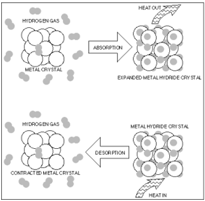
Figura 2.9: Absorção e Dessorção de H₂ na formação de hidreto metálico. Fonte: [46].
Várias ligas podem ser utilizadas para o armazenamento do hidrogênio, ligas à base de \(Mg\), \(Al\), borohidretos alanatos hidretos metálicos, hidretos complexos entre outras. Entretanto, a viabilidade de uso dessas ligas vai depender de parâmetros como temperaturas de hidrogenação e desidrogenação, da cinética dessas reações, reatividade e reversibilidade além de características como custo, densidade, resistência à oxidação e disponibilidade de cada elemento [1, 47, 48]. A classificação dos hidretos metálicos é baseada principalmente na sua estrutura e no mecanismo de ligação.
2.1.4.2 Hidretos binários (binary hydrides)
Os hidretos binários são formados por apenas dois elementos: um metal (\(M\)) e o hidrogênio (\(H\)). Os metais têm grande afinidade com o \(H_2\) sendo capazes de armazenar uma grande quantidade do gás. A natureza da ligação \(M\)-\(H_2\), define suas propriedades:
Hidretos Iônicos (ou Salinos): Formados por metais alcalinos (Grupo 1) e alcalino-terrosos (Grupo 2). O hidrogênio se comporta como um ânion (\(H^-\)). São altamente reativos com a água, liberando \(H_2\). Exemplo: Hidreto de Sódio (\(NaH\)), Hidreto de Cálcio (\(CaH\)).
Hidretos Metálicos (ou Intersticiais): Formados por metais de transição (bloco d e f). O hidrogênio ocupa os sítios intersticiais da rede cristalina do metal. O Paládio (\(PdH\)) é o exemplo mais estudado, conhecido por sua alta capacidade de absorção e cinética rápida [49].
Hidreto de Magnésio (MgH2): É um dos mais promissores para armazenamento de hidrogênio devido à sua alta capacidade gravimétrica, cerca de 7,6% em peso de H2 e baixo custo, No entanto, as ligações \(Mg\)-\(H_2\) são mais fortes, assim devido a sua alta estabilidade termodinâmica, faz-se necessário o uso temperaturas superiores à 300°C para a etapa de dessorção, isso faz com que o processo seja cineticamente lento, o que pode ser tornar ineficiente para muitas aplicações [45].
Hidreto de Alumínio (AlH2): Diferentemente do hidreto de \(Mg\), ele possui uma baixa entalpia de reação, necessitando de uma temperatura de dessorção mais baixa, cerca de 100°C, além disso, tem uma capacidade de armazenamento de \(H_2\) relativamente alta, em torno de 10,1% em peso de hidrogênio [18, 49].
Algumas mudanças no processo de produção das ligas metálicas, a adição de elementos de liga e até mesmo alteração no tamanho das partículas podem alterar as temperaturas e cinéticas das reações dos hidretos metálicos, por exemplo, a adição de \(Ni\) ao \(Mg\), reduz a temperatura de liberação de hidrogênio de 300 °C para 250 °C [50].
2.1.4.3 Hidretos intermetálicos
Os hidretos intermetálicos são formados pela reação química entre a molécula do \(H_2\) com compostos intermetálicos, neste caso, a presença de dois ou mais metais melhoram as propriedades termodinâmicas e cinéticas dos hidretos, melhorando também a capacidade de armazenamento de hidrogênio. Os hidretos intermetálicos podem ser representados pela fórmula química \(A_xB_yH_z\) (A-metais alcalinos com maior afinidade com \(H_2\); B-metais de transição com baixa afinidade com \(H_2\); H-hidrogênio). Neste contexto os hidretos oferecem uma grande versatilidade em termos de composições estequiométricas para melhorar a capacidade de absorção do gás.
Apesar destes materiais possuírem uma tecnologia já implementada comercialmente, a sua densidade gravimétrica acaba sendo limitada pelo peso molecular dos metais de transição. Pesquisas mais recentes vêm trabalhando na substituição de elementos pesados por elementos mais leves, proporcionando um aumento na capacidade gravimétrica destes hidretos. [51].
Ligas como \(LaNi_5H_6\) são bastante utilizadas em baterias Niquel-Hidreto Metálico, por possuir estabilidade cíclica e trabalhar próximo à temperatura ambiente. Já a liga \(TiFeH_2\), tem baixo custo e alta densidade gravimétrica (1,9 MJ/kh). Outra liga utilizada em sistema de armazenamento estacionário, por possuir alta densidade volumétrica é \(TiMn_2H_3\). Estes tipos de hidretos metálicos são mais adequados para aplicações em pequena escala, devido à cinética de hidrogenação e desidrogenação, que ainda é relativamente lenta e ainda exige bastante estudo para melhorar o seu uso [18, 51].
2.1.4.4 Hidretos complexos
Os hidretos complexos são formados pela ligação do hidrogênio com um ânion complexo e estabilizado com um metal, como por exemplo Boro ou Alumínio. A fórmula química é \(M(XH_n)_m\), sendo: \(M\) o metal leve e \(XH_n\) o ânion. Os principais grupos de hidretos complexo são os alanatos \([AlH_x]^-\), borohidretos \([BH_x]^-\), e as amidas \([NH_2]^-\). Dentre eles, o hidreto de alumínio (\(AlH_4\)), hidreto de boro (\(BH_4\)) e Amidas (\(NH_2\)), são os mais promissores, já para os metais leves, destacam-se o lítio (\(Li\)) e o sódio (\(Na\)) devido as suas baixas entalpias de formação [49].
Os alanatos são bastante promissores, pois apresentam alta viabilidade nos processos de hidrogenação e desidrogenação com baixas pressões e baixas temperaturas, o destaque é para o \(NaAlH_4\) (alanato de sódio), o qual pode ser dopado com outros elementos para aumentar a sua capacidade de armazenamento de \(H_2\) [18].
Dentre os borohidretos pode-se destacar o \(LiBH_4\), a sua grande vantagem é maior densidade gravimétrica de hidrogênio, cerca de 18,5% em peso. No entanto, eles são termodinamicamente muito estáveis, necessitando de temperaturas de dessorção acima de 400°C, além de pressões de re-hidrogenação elevadas, o que torna o processo bem desafiador técnica e economicamente [52].
As amidas são compostos formados pela união com um hidreto metálico elementar, por exemplo \(LiNH_2\), esta formação é essencial para que a amida não libere amônia (\(NH_3\)) em vez de hidrogênio (\(H_2\)), o que impediria seu uso em células combustíveis.
2.1.5 Armazenamento de hidrogênio em hidretos químicos no estado líquido
Os hidretos químicos no estado líquido (Figura 2.10), podem armazenar e/ou transportar o hidrogênio em sua forma ligada, ou seja, na forma de outros compostos como amônia, metanol ou LOHCs (líquidos orgânicos transportadores de hidrogênio) que, normalmente são líquidos em condições normais de temperatura e pressão. Estes hidretos, são de fácil manuseio e grande parte da infraestrutura necessária para sua produção e transporte já está instalada, tornando essa alternativa uma das mais promissoras para o armazenamento de longa duração e transporte do hidrogênio em longas distâncias, permitindo o comércio global desse gás de forma relativamente econômica e segura.
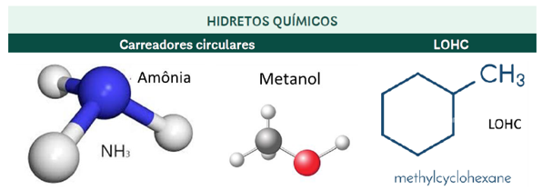
Figura 2.10: Exemplos ilustrativos de hidretos químicos. Fonte: [18].
2.1.5.1 Amônia
A amônia (\(NH_3\)) é um composto químico inorgânico formado por um átomo de nitrogênio e três átomos de hidrogênio. Ela tem sido produzida em larga escala há mais de um século, principalmente para a indústria de fertilizantes, através do processo Haber-Bosch, que combina nitrogênio atmosférico e hidrogênio sob alta pressão e temperatura (2.5). A reação é realizada em temperaturas entre 350 oC e 500 oC e pressões entre 200 e 350 bar, na presença de catalisador. É um processo muito bem estabelecido e plantas de produção de amônia podem ser facilmente adaptadas para utilizar hidrogênio verde [1].
\[\begin{equation} N_2 + 3H_2 \rightarrow 2NH_3 + \text{calor} \tag{2.5} \end{equation}\]
A amônia desempenha um papel crucial como transportador de hidrogênio, especialmente para o transporte e armazenamento de grandes volumes de hidrogênio por longas distâncias. Além de transportador de hidrogênio, pode ser utilizada como combustível para motores à combustão, em algumas células de combustível e como matéria prima para a indústria de fertilizantes verdes [53, 54].
A principal razão para a utilização da amônia como armazenamento de hidrogênio é a sua facilidade de liquefação e alta densidade volumétrica de hidrogênio. A amônia liquida tem uma alta capacidade de armazenamento de hidrogênio, 17,7% em peso o que equivale a 121 Kg/m3 de hidrogênio armazenado. Enquanto o hidrogênio puro requer condições extremas (alta pressão ou temperaturas criogênicas) para ser armazenado e transportado eficientemente, a amônia pode ser armazenada e transportada em temperatura ambiente. Isso permite que a amônia utilize a infraestrutura existente para combustíveis líquidos e gases liquefeitos, como navios-tanque, dutos e terminais, reduzindo significativamente os custos de capital e operacionais associados à logística do hidrogênio [55, 56].
Considerando que é possível produzir amônia, a partir do hidrogênio verde (obtido pela eletrólise da água), sem mudanças significativas no processo, o maior desafio é o processo de desidrogenação. A maneira mais comum para se obter o hidrogênio é através da decomposição da amônia, em altas temperaturas e na presença de catalisadores (2.6):
\[\begin{equation} 2NH_3 \rightarrow N_2 + 3H_2 \qquad (Ni,\ T = 900\,^{\circ}C) \tag{2.6} \end{equation}\]
O processo de desidrogenação da amônia ocorre através da adsorção da amônia na superfície do catalisador, onde as ligações \(N\)-\(H\) são quebradas e ocorre a dessorção recombinativa do \(N\) e do \(H\) para formar as moléculas gasosas de \(N_2\) e \(H_2\), sendo este o processo que determina a velocidade de decomposição. Neste contexto, vários catalisadores são aplicados na decomposição da amônia, tais como \(Ru\) (Rutênio), \(Ni\) (Níquel), \(Co\) (Cobalto), \(Fe\) (Ferro), \(Pt\) (Platina) e \(Pd\) (Paládio). Entre eles, o Ru é o catalisador mais promissor, o qual pode diminuir a temperatura do processo, porém aumenta significativamente o custo final. Os demais catalisadores são menos eficientes e necessitam de temperaturas mais elevadas para a conversão completa da amônia em hidrogênio [55, 56].
2.1.5.2 Metanol
O metanol (\(CH_3OH\)), também tem um grande potencial para armazenar e transportar hidrogênio, sendo uma boa opção de entrega de hidrogênio em termos de quantidade final transportada e custos. Por ser um líquido à temperatura ambiente, é relativamente muito fácil de armazenar e transportar. O metanol tem capacidade de armazenar 12,5% em peso de hidrogênio o equivalente a 99 Kg/m3.
Metanol pode ser produzido a partir da hidrogenação do \(CO_2\) (2.7), utilizando catalisadores sólidos (\(Cu\)/\(ZnO\)/\(Al_2O_3\)) em temperaturas entre 220 e 280 °C.
\[\begin{equation} CO_2 + 3H_2 \rightarrow CH_3OH + H_2O \tag{2.7} \end{equation}\]
A hidrogenação do \(CO_2\) para \(CH_3OH\) e a desidrogenação do \(CH_3OH\) para \(H_2\) e \(CO_2\) constituem um ciclo de “carbono neutro” para armazenamento e liberação de \(H_2\).
A liberação do hidrogênio do metanol pode ser realizada pela reforma a vapor, por oxidação parcial, decomposição do metanol e reforma a vapor oxidativa [18, 57]. Algumas rotas de desidrogenação:
- Reforma a vapor com água, utilizando CuO/ZnO-catalisadores (2.8).
\[\begin{equation} CH_3OH + H_2O \rightarrow CO_2 + H_2 \tag{2.8} \end{equation}\]
- Oxidação parcial (2.9).
\[\begin{equation} CH_3OH + \frac{1}{2}H_2O \rightarrow CO_2 + 2H_2 \tag{2.9} \end{equation}\]
O Processo de reforma a vapor, é o único que possibilita a liberação de três, em vez de dois mols de hidrogênio, por mol de metanol. A reforma a vapor do metanol é realizada em baixas temperaturas em torno de 200 oC e 300 oC e geralmente são usados catalisadores à base de \(Cu\). Deve-se salientar que algumas reações químicas secundárias também podem ocorrer simultaneamente e formar subprodutos indesejáveis, como \(CO\), \(CO_2\), \(CH_4\) e carbono os quais também podem ser gerados em função do catalisador utilizado [57, 58].
O processo cíclico de síntese de CH3OH com \(CO_2\)/\(H_2\) e desidrogenação de \(CH_3OH\) para produzir \(H_2\)/\(CO_2\) é um sistema de armazenamento de \(H_2\) muito promissor e um método viável para a utilização de \(CO_2\), o que poderia auxiliar nos problemas energéticos e ambientais [59].
2.1.5.3 Líquidos orgânicos carreadores de H₂ (LOHC)
Os Líquidos Orgânicos Carreadores de Hidrogênio (LOHCs), representam uma abordagem inovadora para o armazenamento e transporte de hidrogênio. São compostos orgânicos que podem absorver e liberar hidrogênio através de reações químicas reversíveis de hidrogenação e desidrogenação. A principal atratividade dos LOHCs está na sua capacidade de armazenar hidrogênio em um estado líquido em condições ambientais de pressão e temperatura, o que também permite a utilização da infraestrutura existente para combustíveis líquidos. Isso elimina a necessidade de alta pressão ou criogenia, tornando o transporte de hidrogênio mais seguro e economicamente viável em comparação com o hidrogênio gasoso comprimido ou hidrogênio líquido. Outra vantagem é que nestes processos não há a formação de \(CO_2\) ou \(N_2\), portanto não há a necessidade de capturar e/ou armazenar estes gases [60].
Uma desvantagem desse tipo de armazenamento é a necessidade de utilização de altas temperaturas e catalisadores de metais nobres de altos custo como \(Rh\), \(Ru\), \(Pt\) e \(Pd\), os quais estão diretamente relacionados com a quantidade e a cinética das reações de hidrogenação e desidrogenação e também possível formação de compostos indesejáveis. Adicionalmente, a desidrogenação de muitos cicloalcanos ou compostos aromáticos apresenta uma cinética muito difícil, necessitando de catalisadores altamente ativos e altas temperaturas que podem também afetar a pureza do gás hidrogênio que prejudica a vida útil das células de combustível do tipo PEM [60].
O funcionamento dos LOHCs baseia-se em um ciclo reversível de reações químicas de hidrogenação e desidrogenação. Na etapa de hidrogenação, o \(H_2\) gasoso reage com a molécula orgânica (que pode se um hidrocarboneto) na presença de um catalisador (exemplo \(P_t\)) formando um composto orgânico rico em hidrogênio, a reação é exotérmica e ao final desta etapa o composto pode ser transportado para o local de uso. Já no local de uso, o composto é aquecido, também na presença do catalisador para a liberação do \(H_2\), neste processo a reação é endotérmica. A molécula orgânica agora desidrogenada, retorna para o local de produção de hidrogênio para ser recarregada, fechando o ciclo dos LOHCs [18].
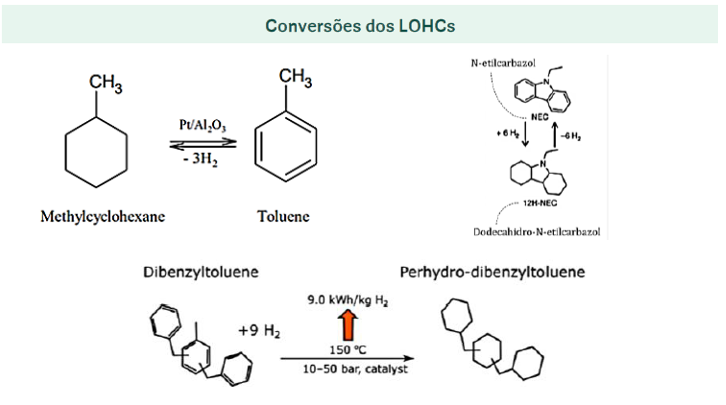
Figura 2.11: Exemplos de conversões de LOHC. Fonte: [18].
Os LOHCs que apresentam maior potencial para o armazenamento de hidrogênio são os compostos aromáticos, dibenziltolueno (DBT) com 6,2% em peso, o equivalente a 64kg/m3; o metilciclohexano e tolueno (MCH-TOL) com 6,1% em peso, o equivalente a 47 kg/m3 e N-etilcarbazol e dodecahidro-Nethylcarbazol (NEC-DNEC) com 5,8% em peso, o equivalente a 54 kg/m3, entre outros. Entre estes, o sistema DBT é altamente favorecido devido às suas excelentes propriedades, boa estabilidade térmica, alto ponto de ebulição (380oC), baixo ponto de fusão (90oC) e alta capacidade gravimétrica de armazenamento de hidrogênio, na sua forma hidrogenada, tem propriedades físicas semelhantes ao óleo diesel, facilitando seu transporte [1, 61, 62].
Os LOHCs têm a vantagem de exigir menos energia para seu processo de hidrogenação e desidrogenação do que outras opções, como o metanol e a amônia. Por exemplo, o tolueno e o metilcicloexano podem ser convertidos em um processo de hidrogenação a uma temperatura de 350 °C. Enquanto o DBT (dibenziltolueno) e o perhidro-dibenziltolueno podem ser trabalhados a 150°C com a presença de um catalisador. Isso representa uma redução significativa de temperatura e, consequentemente, de energia necessária para a conversão [18].
Apesar de haver técnicas bastante consolidadas para o armazenamento de hidrogênio, ainda não existe uma tecnologia de armazenamento que seja totalmente segura e econômica. Na sua forma pura, o hidrogênio líquido alcança altas densidades à pressão atmosférica, mas o seu armazenamento ainda é um grande desafio devido à dificuldade e custos envolvidos em sua liquefação. No estado gasoso apresenta baixa densidade volumétrica de armazenamento de hidrogênio, mesmo para uma alta pressão de 700 bar. Adicionalmente necessita de materiais que não sejam degradados pelo hidrogênio e suportem as altas pressões. No estado gasoso o transporte do hidrogênio por gasodutos se mostra uma técnica viável economicamente.
Na forma de hidretos ou adsorvidos em materiais com alta área específica, o armazenamento de hidrogênio alcança resultados satisfatórios, mas parâmetros como disponibilidade e custo dos materiais utilizados, temperaturas de hidrogenação e desidrogenação e a cinética das reações envolvidas são questões ainda prioritárias para determinar a viabilidade do uso destes materiais. Quando ligado quimicamente, a amônia verde é a que apresenta a forma mais promissora para o armazenamento e transporte do hidrogênio, pois tem altas densidades de armazenamento, sua síntese, manuseio e transporte são muito seguras e muito bem estabelecidas.